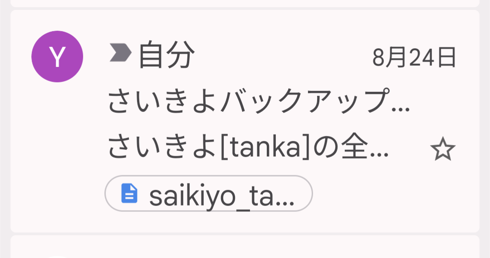
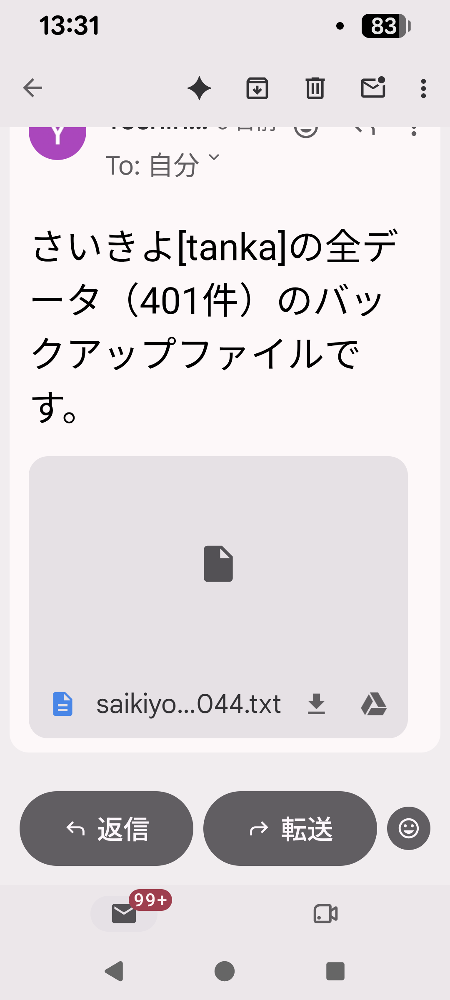
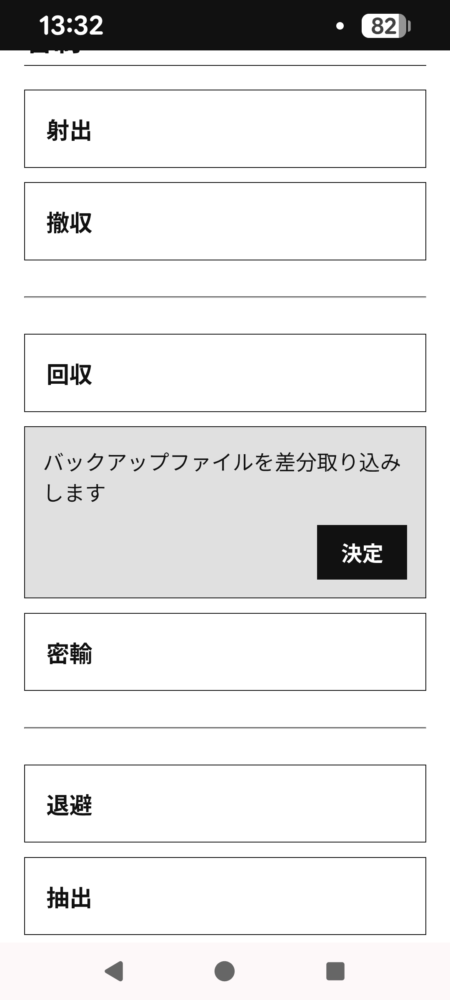
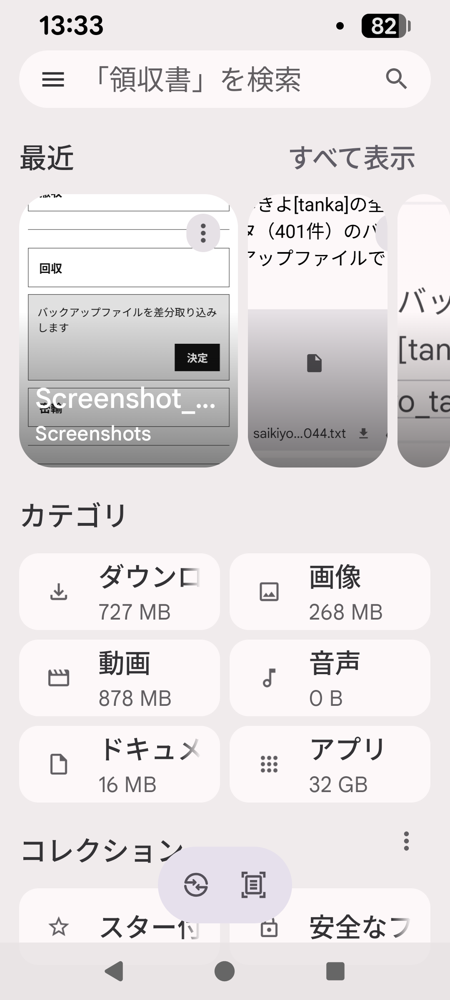
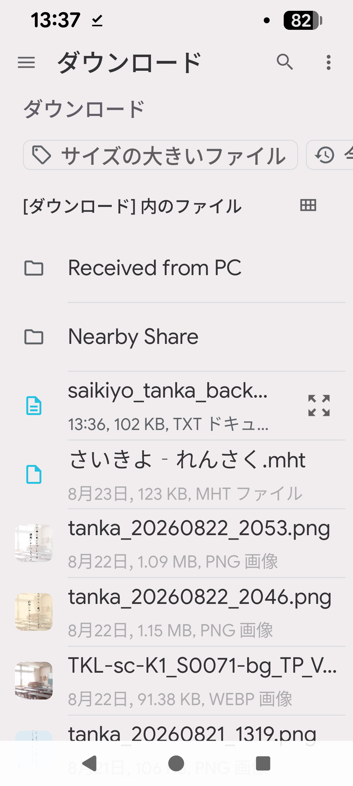
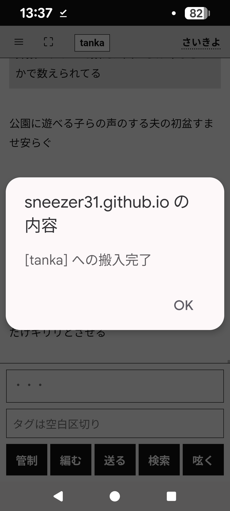

短歌アプリ『さいきよ』の運用術
短歌アプリ『さいきよ』のデータ管理の一例をご紹介します。
スマホとパソコンの両方で作業したい人は必見です。
【作業開始時のフロー】
- まずいきなり「撤収」する。
- メーラーから最新のバックアップファイルをダウンロードする。
↓を押してくださいよ！


- 「回収」で差分を取り込む。




【作業終了時のフロー】
- 作業をもりもりやる。
- 作業が終わったら「射出」で自分宛にバックアップを送る。
手動管理による完全な自己管理
- 自分宛に射出したメールの送信時刻が絶対的な著作権の証明となり、盗作問題からユーザーを守ります。
- この運用ではデータを他社のサーバーに預けないので、サービス終了や突然の有料化などで困ることがありません。
タイムラインという概念はLINEやXに似ていますが、これはSNSではありません。
梅棹忠夫の「京大式カード」をデジタルで再構築した、知的生産のためのツールです。
タイムスタンプが命。
「さいきよ」の設計思想の源流である京大式カードの詳細については、原典をご参照ください。
梅棹忠夫『知的生産の技術』（岩波新書）をAmazonで確認する